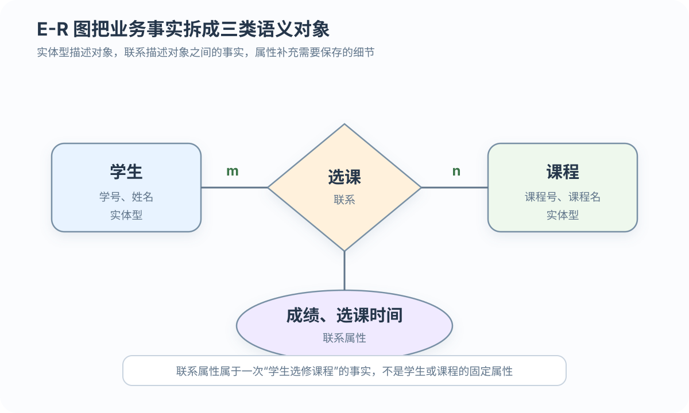
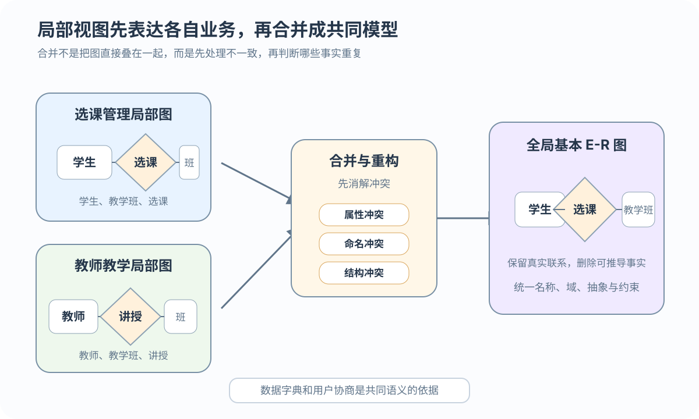

真实且充分
概念模型真实、充分地反映对象、联系、约束和处理要求
根据用户需求建立可讨论、可集成的业务结构
 VER. 2608.2
Built with impress.js
VER. 2608.2
Built with impress.js
概念结构设计把用户需求组织成可讨论、可转换的业务模型
概念模型独立于具体 DBMS，却要能表达真实业务
概念模型真实、充分地反映对象、联系、约束和处理要求
概念模型能和用户共同讨论
概念模型能随应用变化扩充
概念模型能转换为关系等数据模型
判断对象是否有自己的性质、联系和生命周期
| 业务对象 | 可作为属性的情形 | 应作为实体的情形 |
|---|---|---|
| 专业 | 学生只有一个专业标签 | 支持主修、辅修和专业属性；专业有自己的码 |
| 职称 | 只显示教师的文字标签 | 需要描述工资和福利规则 |
| 教学班 | 课程只有一个班时可作选课联系属性 | 多班、排课和独立容量形成实体 |
| 先修课 | 每门课至多一门直接先修课 | 多门直接先修课形成课程—课程递归 m:n |
学生（学号，姓名）：学号是稳定区分学生的码，姓名只是描述属性；对象有自己的属性、联系、生命周期或多值需求时才考虑建为实体型在当前建模范围内，作为属性的对象不再单独描述自身性质，也不作为独立对象与其他实体发生联系
判断联系基数时，分别询问每一端实体最少和最多对应多少另一端实体
| 联系 | 语义判定 | 教务例子 |
|---|---|---|
| 1:1 | 每一端的一个实体至多对应另一端一个实体 | 学院与教师的“担任院长” |
| 1:n | 一端的一个实体可对应多个，另一端每个实体至多对应一个 | 学院与系 |
| m:n | 两端的每个实体都可以对应多个 | 学生与课程 |
| 联系结构 | 二元、递归或多元，描述参与实体的结构 | 课程与先修课程是递归联系 |
1:1 / 1:n / m:n；参与次数：min..max。例：学院 0..N — 设置 — 系 1..1；递归联系仍可有自己的 1:n 或 m:n 基数图形只是载体，码、联系属性和约束才是可执行的设计信息

矩形表示一类可区分的对象
椭圆表示对象的描述项
菱形表示实体之间的业务事实
本图只展示学生—课程的二元 m:n 简化示例；矩形内属性是紧凑记法，学生码为学号、课程码为课程号，完整的 min..max 参与约束还需另行标注
联系属性描述一个联系实例，而不是任一端实体的固有属性；多元联系不能任意拆成二元联系
| 联系 | 联系属性 | 为什么放在联系上 |
|---|---|---|
| 选课 | 成绩、选课时间 | 描述同一学生和课程组合的选课结果 |
| 讲授 | 是否主讲 | 描述教师与教学班之间的讲授角色 |
| 排课 | 上课时间、教室 | 由教室、教学班和时间片共同确定的多元事实 |
| 供应 | 供应量 | 描述某供应商为某项目提供某零件的数量 |
| 评价 | 评价内容、教师反馈 | 由学生、教师和教学班共同确定的三元事实 |
最少值到最多值同时说明参与次数的下限和上限
| 记法 | 含义 | 教务例子 |
|---|---|---|
| 1..1 | 必须且只能参与一次 | 系必须归属一个学院 |
0..N | 可以不参与，也可参与多次 | 新学院暂时没有系 |
| 20..30 | 参与数量被业务范围限制 | 学生选修课程数 |
| 读法 | min=0 可不参与；min=1 必须参与，max 表示最多次数 | 每个教学班 1..1 必须有课程 |
0..N — 设置 — 系 1..1；1:n 主要说最大基数，min..max 同时说参与下限和上限扩展 E-R 语义只在业务确实需要时加入额外约束
本科生 ISA 学生；子类继承父类属性，也可以增加自己的属性。ISA 还要说明不相交/可重叠、完全/部分特化
教学班号只有在课程范围内才有意义；教学班依赖课程存在，课程号是所有者码，教学班号只是部分码
汽车与车轮构成部分—整体关系；独占部分不能脱离整体，非独占部分可以独立存在
分类属性、不相交约束和完全特化进一步限制 ISA 的含义
UML 类图可以表达相近语义：类≈实体型、类属性≈属性、关联≈联系、PK≈码、multiplicity≈min..max、继承≈ISA；这些对应关系只用于语义转换，不决定 UML 的完整建模方法
分图让不同业务小组能够在自己的语境中表达需求
冲突需要回到共同业务语义和用户协商

| 冲突 | 典型表现 | 处理方向 |
|---|---|---|
| 属性冲突 | 教学班号类型不同、出生日期精度不同 | 统一类型、编码和单位 |
| 命名冲突 | 同名异义或“项目／课题”异名同义 | 约定全局名称 |
| 结构冲突 | 职称是属性还是实体、属性集合不同、二元或三元联系 | 回到业务语义重判抽象与联系 |
该图只展开全局模型中的选课子图；教师—讲授等其他非冗余联系未在图中展开，不表示它们被删除
冗余分析依据数据字典、流程与依赖；函数依赖和最小覆盖只是辅助
已修(Student,Course)=存在选课(Student,Class) 且开课(Class,Course)，且成绩达到合格阈值| 设计判断 | 教务例子 | 处理 |
|---|---|---|
| 可消除 | 已修可由合格选课和开课对应课程推出 | 删除冗余联系 |
| 可保留 | 已修课程学分支持高频统计 | 保留派生属性并维护同步规则 |
保留冗余前要评估查询收益和维护成本；一旦保留，就必须承担一致性维护责任
概念结构设计把业务事实组织成可讨论、可集成、可转换的模型
概念模型作为共同语言，并满足四个质量要求
划分实体、属性、码和联系属性
表达基数、参与、递归、ISA、弱实体、Part-of 与 UML 语义
消解冲突，判断冗余并记录维护责任
基本 E-R 图为逻辑模式转换提供输入，并保留后续设计需要的码和约束
min..max 分别是什么？